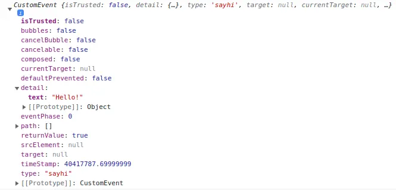

记录一下 Svelte 的概念和基础，省得每次去开教程了。
创建项目
注意 SvelteKit 和 Svelte 不一样。用 create-vite 选择就行了。
文件结构
一个 Svelte 组件保存的后缀名是 .svelte 内容一般是三个部分，脚本部分，HTML 部分和 CSS 部分。CSS 是只作用于这一个组件的。各个组件可以互相引用，就像 React 那样 Import。举例：
<script lang="ts">
import Another from './Another.svelte';
import picture from './assets/picture.svg'
const name:string = "hello!"
</script>
<p>This is a paragraph.</p>
<Another></Another> <!-- 也可以用 <Another/> -->
<img {picture} alt="{name}">
<style>
p {
color: purple;
font-family: 'Comic Sans MS', cursive;
font-size: 2em;
}
</style>- 如果一个标签的属性和值相同，可以简单书写，例如：
<img {src} alt="A man dances.">。 - 如果变量包含的是 HTML，可以使用
{@html ...}标签转义，例如：<p>{@htmlHello}</p>。如果引入了marked这样的处理器，可以直接{@html marked(value)}这样渲染。
事件处理
给 HTML 元素加上 on:xxxx 标签注册事件处理器：
<script>
let count = 0;
function incrementCount() {
count += 1;
}
</script>
<button on:click={incrementCount}>
Clicked {count} {count === 1 ? 'time' : 'times'}
</button>也可以使用简略形式：
<button on:click="{e=>count++}">
Clicked {count} {count === 1 ? 'time' : 'times'}
</button>使用 $: 来保持引用，这样一个变量改变了，另外一个也能够随之改变。这是一个 标记语句，就是声明了一个特殊的叫做 $ 的标记。
let count = 0;
$: doubled = count * 2;Svelte 的更新取决于是否有 assignments 也就是赋值操作，所以单纯的写 somethings.some_prop = 'xxx' 不会触发更新。你还需要 something = something 才行。对于数组，可以便捷的采用 numbers = [...numbers, new_element]; 来更新。
<script>
let numbers = [1, 2, 3, 4];
function addNumber() {
numbers = [...numbers, numbers.length + 1];
}
$: sum = numbers.reduce((t, n) => t + n, 0);
</script>
<p>{numbers.join(' + ')} = {sum}</p>
<button on:click={addNumber}>
Add a number
</button>modifiers
用 | 来给处理器加额外设置，就像这样：
<script>
function handleClick() { alert('no more alerts') }
</script>
<button on:click|once={handleClick}> Click me </button>多个可以叠加，类似 on:click|once|capture={...} 。
preventDefault：就是e.preventDefault()。stopPropagation：同样地，相当于调用e.stopPropagation()。once：这个处理器只使用一次。self：只有在event.target是元素自己时调用。trusted：只有event.isTrusted是True才调用。比如element.click()就不是。
消息传递
dispatch
组件之间的消息传递就是所谓 dispatch（这个词中文含义是 调度，派遣，发送 的意思），比如说有一个 Outside 组件，里面包含了一个 Inner 组件，Inner 组件想要让外部组件更新一项信息，如果用简单的 React 的话那就是把外部组件的对应处理函数作为 Inner 的一个 prop 传送进去，让它调用。如果使用 dispatch 方法的话，就是 Inner 向外部组件发送一个消息，告诉他发生了什么，再由外部组件决定干啥。
为此，Inner 组件需要引入 createEventDispatcher 来便捷的创建标准的消息。而外部组件需要对于每一种类的消息，定义一个 on:<消息种类> 的处理器来接收消息。举例如下：
Inner：
<script>
import { createEventDispatcher } from 'svelte';
const dispatch = createEventDispatcher();
function sayHello() {
dispatch('sayhi', { text: 'Hello!'});
}
</script>
<button on:click={sayHello}>
Click to say hello
</button>Outside：
<script>
import Inner from './Inner.svelte';
function handleMessage(event) {
alert(event.detail.text);
}
</script>
<Inner on:sayhi={handleMessage}/>接受到的消息是这样的结构，主要关心的数据就是里面的 detail 和 type：

夹心饼干
有时候会遇到「夹心饼干」一样的组件堆叠，最里面的组件要传递信息给最外面的组件，于是要穿越中间很多层，Svelte 给被穿越的那些组件提供了简单的数据传递写法。一个没有处理器的 on:xxx 会转发一切到上层：
<Inner on:sayhi/>on:xxx 不仅仅可以转发自定义的消息，对于 DOM 事件也可以转发。所以可以对最内层的某个按钮的 click 事件一层层转发到最上层处理。
组件的 props
就像 React 的 props 一样，不过是以 export 变量的形式定义的：
<script>
export let answer = 'default value'; // answer 是 props，可以设定默认值
</script>
<p>The answer is {answer}</p>其他组件调用它是这样：
<script>
import MyElement from './Nested.svelte';
</script>
<MyElement answer={42}/>对于有很多属性的组件，可以用简略的方法定义一个 Object 放进去。假如有一个组件有四个 props ：name，version，speed，website：
<script>
import Info from './Info.svelte';
const pkg = {
name: 'svelte',
version: 3,
speed: 'blazing',
website: 'https://svelte.dev'
};
</script>
<!--不要这样做-->
<Info name={pkg.name} version={pkg.version} speed={pkg.speed} website={pkg.website}/>
<!--用缩略形式-->
<Info {...pkg}/>按需渲染
if
// if...
{#if user.loggedIn}
<button on:click={toggle}> Log out </button>
{/if}
// if...else
{#if user.loggedIn}
<button on:click={toggle}>
Log out
</button>
{:else}
<button on:click={toggle}>
Log in
</button>
{/if}
// if...else if...
{#if x > 10}
<p>{x} is greater than 10</p>
{:else if 5 > x}
<p>{x} is less than 5</p>
{:else}
<p>{x} is between 5 and 10</p>
{/if}each
循环，类似于 React 中的 map 函数：
<ul>
{#each ['hello','world'] as str,index}
{index} -> {str} <br/>
{/each}
</ul>如果循环的对象是一个复杂的 Object，那么可以直接解构。假如数据 addrs 是 {name:string, age:number, address:string} 类型的数组，那么可以这样：
{#each addrs {name, age, address}, index}
// processing data
{/each}默认情况下，当改变 each 中的数据时，最后一个项目会被增加或者删除，然后更新每一个更改的项目。也就是说，它是倒着更新的，所以，需要指定一个 key。
{#each things as thing (thing.name) }
<Thing name={thing.name}/>
{/each}
{#each things as {id,name},index (id) } // key 的括号放在最后
{id} {name} {index} <br/>
{/each}Promise
直接给 promise 包装一层，很方便：
{#await fetch('https://www.bing.com/')}
<p>...waiting</p>
{:then data}
<p>{data}</p>
{:catch error}
<p style="color: red">{error}</p>
{/await}
// 相同
{#await fetch('https://www.bing.com/') then data}
{data}
{:catch error}
<p style="color: red">{error}</p>
{/await}绑定
通过绑定，可以更好的处理一些交互式元素，特别是 input 类的处理：
input
<script>
let name = 'world', a = 1, b = 2;
</script>
<input bind:value={name}>
<input type=number bind:value={a} min=0 max=10>
<input type=range bind:value={a} min=0 max=10>
<h1>Hello {name}!</h1>如果不使用 bind 的话，就需要捕获输入事件，定义一个处理这个事件的函数，再更新数据，比较繁琐。
对于一般的数据，使用 bind:value，对于 checkbox 是否选中，使用 bind:checked。如果你需要绑定更多值，则可以使用 bind:group 将 value 属性放在一起使用。那么多个组件就共享一个数据源了。bind:group 只能用于 checkbox 和 radio
对于 each 中的元素，可以挨个绑定，详见这里。
select
<script>
let questions = [
{ id: 1, text: `Where did you go to school?` },
{ id: 2, text: `What is your mother's name?` },
{ id: 3, text: `What is another personal fact that an attacker could easily find with Google?` }
], selected;
<script/>
<select bind:value={selected} on:change="{() => answer = ''}">
{#each questions as question}
<option value={question}>
{question.text}
</option>
{/each}
</select>selected 的内容是 {id:number, text:string} 的类型。
可编辑元素
<script>
let html = '<p>Write some text!</p>';
</script>
<div
contenteditable="true"
bind:innerHTML={html}
></div>尺寸绑定
每个块级标签都可以对 clientWidth、clientHeight、offsetWidth 以及 offsetHeight 属性进行绑定：
<div bind:clientWidth={w} bind:clientHeight={h}>
<span style="font-size: {size}px">{text}</span>
</div>这些绑定是只读的，更改 w 和 h 的值不会有任何效果。
生命周期处理
onMountfired after the component is renderedonDestroyfired after the component is destroyedbeforeUpdatefired before the DOM is updatedafterUpdatefired after the DOM is updated
onMount
在每个组件第一次渲染之后触发。
<script>
import { onMount } from 'svelte';
let data=0
console.log(`Data is ${data}`) // 0
onMount(()=>{data=100;})
</script>
<b>{data}</b>在 onMount 中可以注册 async 函数，例如在里面 await fetch 什么东西。如果注册函数返回一个函数，这个函数将在组件销毁时触发。
onDestroy
onDestroy 允许清理数据或停止我们可能在组件初始化时启动的任何操作，例如计时器或使用 setInterval 的计划周期函数。
<script>
import { onMount } from 'svelte'
onMount(async () => {
const interval = setInterval(() => {
console.log('Something...')
}, 1000)
return () => {
clearInterval(interval)
}
})
</script>调试
使用 {@debug ...} tag。